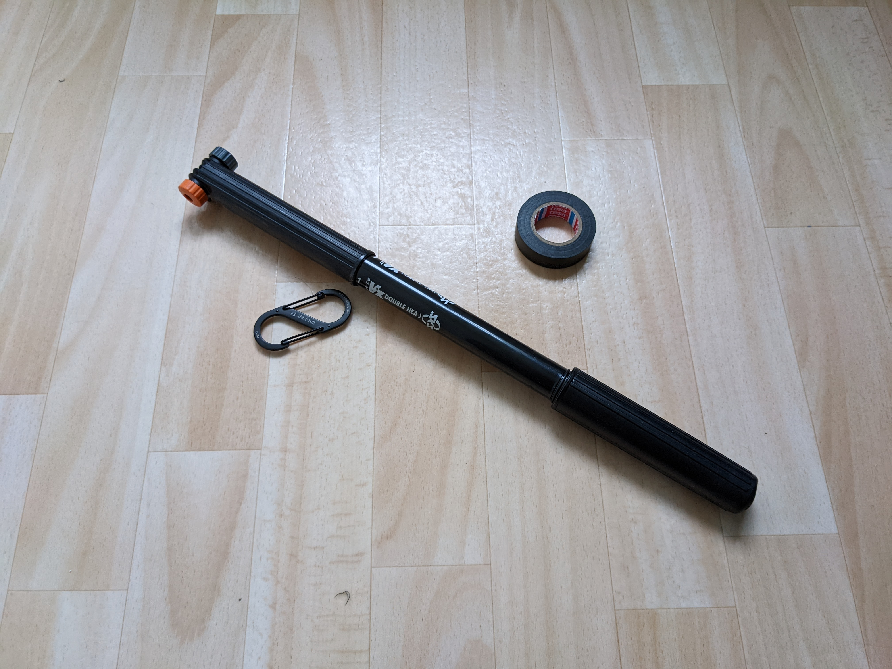
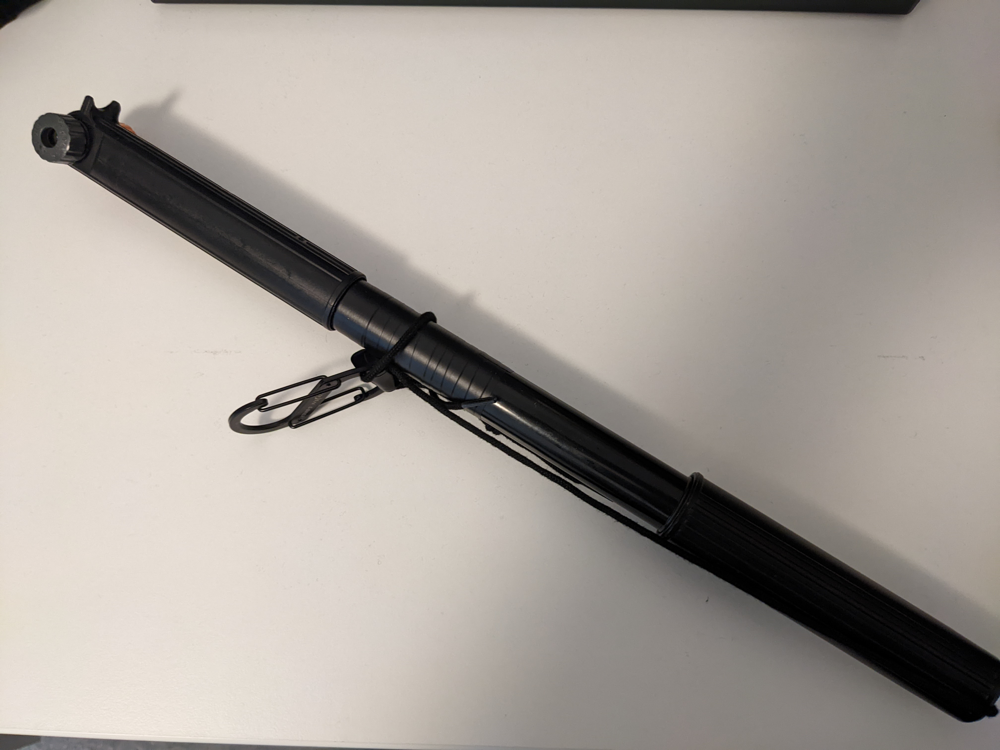

I always thought of myself more of a Jedi, but today I made a Sith lightsaber. Here's how.


With a little imagination, light shoots out of both sides when the pump or the "buttons" are pressed!
https://oliz.io/mocs/spaceships/the-shiv/
(made that recently, you are welcome!)
It's still an air pump for bicycles, just remove the shoe string and you can pump your rides!
I got this as a present from my partner. It's from Muji:

It's a manual paper shredder, because I always disliked the noise of the electric ones. Safety instructions are on the backside, hand for scale. You turn the handle above, put the paper in and paper scrabs come out at the bottom. Turning the handle feels like turning on a lightsaber, too!